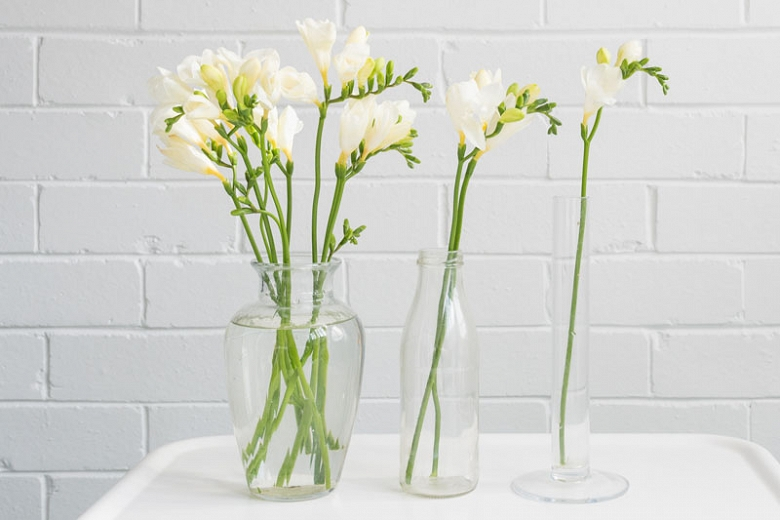
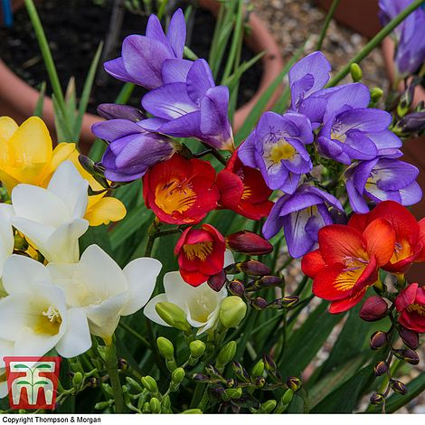
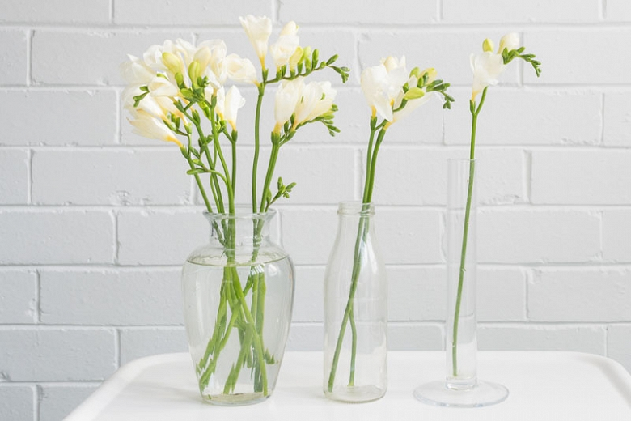
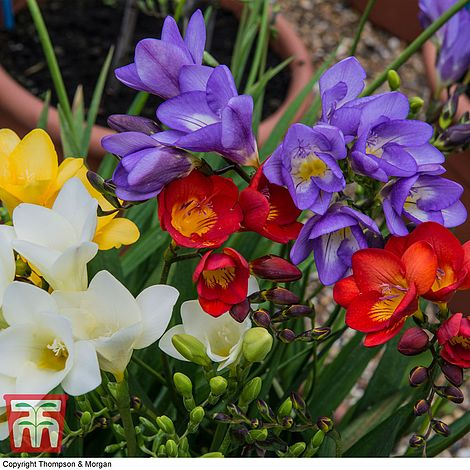

Common Name: Freesia
Botanical Name: Freesia
Chinese Name: 小苍兰属
 



Other references
RHS
Gardenia
Gardeners' World
Sarahraven
Planting
Soil and Site
Well-drained spot, in sun or light shade. Add plenty of organic matter to improve thin soils.
Spacing
Plant them 5cm deep and 5-8 cm apart. The bulbs look like small, slim onions. Plant them with the pointed end facing up.
In the garden
Our prepared freesia corms can be planted in autumn for flowering inside from January to April or from March (in a greenhouse) or April-July (outside). I have gone on planting outside until July for flowers almost up until Christmas. Plant the corms straight into the ground in a well-drained spot in sun or light shade. I grew some very successfully last summer and autumn in a west-facing bed against a hedge.
When the plants are up and growing, they will benefit from a potash-rich feed – comfrey juice or something you would use for tomatoes (see our website for details).
For containers
Plant six bulbs, pointy end upwards (again at 1-2 in deep) in a 13cm/5in pot, or spaced at that equivalent in a larger pot. They like a rich, loam-based compost (which I expect explains why they do well on my heavy soil) with a little extra grit added for drainage. Go for about two thirds compost, one third grit.
Water regularly and keep them moist and shaded at all times – a cold greenhouse or conservatory is ideal. Once the corms start to sprout, move the pots into full sunlight and keep watering. When the buds show colour, you can bring them indoors. If they have been planted in good soil or compost they will not require feeding.
Aftercare
If planted in good soil or compost, they will not require feeding. Flowering takes around 100-120 days from planting.
Both in the garden and in pots, they will need support to keep the foliage and flowering stems upright as they grow. In pots you can use special round supports, which are held on a central cane, but a triangle or square of canes would do the job just as well. In the garden, use twiggy end branches of silver birch or hazel.
Freesias are not fully hardy, so you are usually recommended to lift the plants in the autumn, either when the leaves yellow, or after the first frost. Cut the stems back to 1in and allow the corms to dry. Remove the old, shrivelled portion, keeping only the new plump corms. These store easily in coir, dry potting compost or sand. Keep them in a cool, dry, frost-free place. Plant again, when the ground begins to warm in late April. Stagger plantings to extend the flowering season.
Cut Flowers
The yellows, blues and whites have a longer vase-life than the reds and pinks, with some lasting 3 weeks when cut in bud. Either bought or home-made, flower food is worth it with freesias. Use one teaspoon of thick bleach and two of a thick sugar syrup to 1 litre of water, or two small flower food sachets. This extends the vase life by as much as 20%, helps the buds to develop and is said to enhance scent.